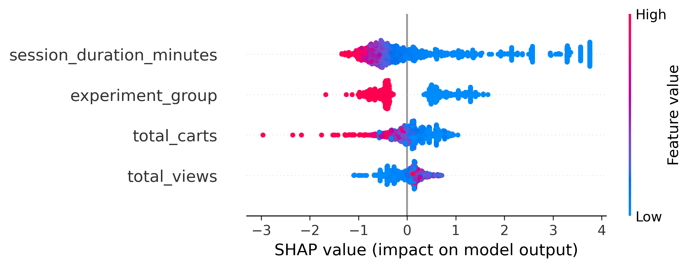
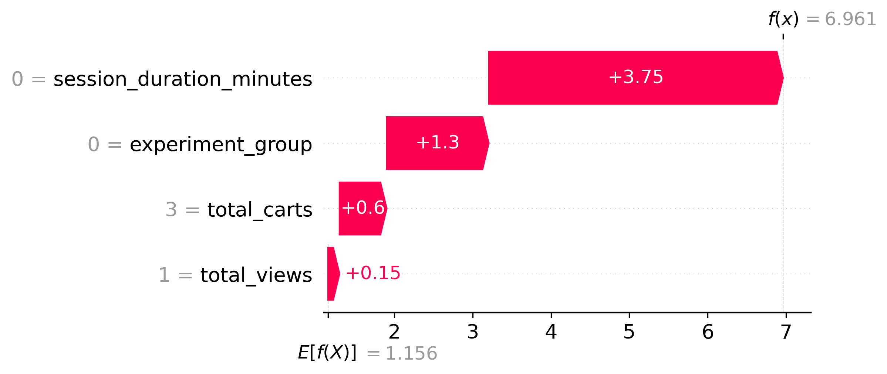

Overview
E-Commerce Growth & Retention is an end-to-end, production-grade analytics and machine-learning project that answers a concrete business question: does a redesigned checkout flow actually move revenue, and can we predict which shoppers are about to abandon their cart? I built the entire system solo, from raw clickstream ingestion to a live, interactive web app — deliberately spanning data engineering, analytics engineering, statistical inference, machine learning, and MLOps so the project reads as one continuous data pipeline rather than a single notebook.
Architecturally, data flows through a classic medallion pipeline: over 20 million raw cosmetics-shop events (~4.6 GB across five months) are ingested with a simulated A/B experiment, landed in Google Cloud Storage and BigQuery, transformed and tested with dbt, statistically validated with a Chi-Square test, modeled with an XGBoost classifier explained via SHAP, and finally served through a FastAPI inference service behind a multi-tab Streamlit front end — all containerized with Docker and monitored for data drift with Evidently AI.
Problem and Goal
Cart abandonment is the single largest source of leaked revenue in e-commerce: shoppers add items, reach the checkout, and disappear. Two questions follow directly from that. First, the causal question — if we ship a new checkout experience, does it genuinely lift conversion, or are we fooling ourselves with noise? Second, the predictive question — given a live session, can we estimate the probability that this user will abandon their cart in time to intervene?
I set out to answer both rigorously. The causal question is handled with a properly randomized A/B test and a significance test rather than eyeballed dashboards; the predictive question is handled with an interpretable gradient-boosted model whose every prediction can be explained feature-by-feature. The goal was never just a model file — it was a defensible, deployable system that a product or growth team could actually act on.
The Dataset & Experiment Simulation
The foundation is the Kaggle "eCommerce Events History in a Cosmetics Shop" dataset — real, anonymized clickstream
logs covering October 2019 through February 2020. Each row is a single user action (view, cart, purchase,
remove_from_cart) with a product, brand, price, user ID, and session ID. Across five monthly files this is
roughly 20 million events totaling ~4.6 GB — large enough that naive in-memory processing fails, forcing real
data-engineering decisions.
Since I didn't have a real experiment to analyze, I simulated one rigorously. A Python script hashes each
user_id with MD5 and assigns the user to Control (old checkout) or Treatment (new checkout) based on the
hash parity. Hashing makes the assignment deterministic and stable — the same user always lands in the same group
across all five months — which is exactly how production experiment-bucketing systems behave. I then injected a realistic
causal effect: 5% of Treatment-group cart events are probabilistically converted into purchase events, encoding
a genuine conversion uplift for the new checkout that the downstream statistical test has to rediscover from the data.
Phase 1 — Data Engineering & Cloud Ingestion
The raw CSVs are far too large to load whole, so ingestion is streamed in one-million-row chunks with pandas. Each chunk is cleaned (NaN user IDs are coerced), tagged with its experiment group, and written incrementally to a processed directory — keeping memory flat regardless of file size.
The processed, experiment-tagged data is uploaded to a Google Cloud Storage data lake as partitioned files, then
loaded into a BigQuery Bronze (raw) dataset (cosmetics_bronze.events). This Bronze layer is the immutable,
single-source-of-truth landing zone that every downstream transformation builds on — establishing a clean separation
between raw ingestion and modeled, business-ready data.
Phase 2 — Modern Data Stack: dbt Transformation & Testing
Transformation lives in a documented dbt project running on BigQuery, organized as a medallion architecture (Bronze → Silver → Gold) so each layer has a single, clear responsibility.
- Silver (staging):
stg_eventsis a view that casts every column to a strict type, normalizes timestamps, and filters out malformed rows (null or'unknown'users, null sessions) — turning messy raw logs into a trustworthy clean layer. - Data quality tests: dbt schema tests enforce contracts directly in the pipeline —
not_nullon keys and timestamps, and anaccepted_valuestest that guaranteesevent_typeonly ever containsview,cart,purchase, orremove_from_cart. A bad upstream load fails the build instead of silently corrupting analysis. - Gold (marts): business-ready tables built with advanced SQL.
The marquee Gold model is fact_user_sessions, which reconstructs user sessions purely in SQL using window
functions: LAG() finds the gap to each user's previous event, a 30-minute inactivity timeout flags session
boundaries, and a cumulative SUM() over that flag generates a stable per-user session ID. Each session is then
aggregated into total views, carts, purchases, revenue, and duration. A second model, dim_users, rolls sessions up to
the user grain to compute lifetime value, total sessions, and days-since-last-session, carrying each user's
experiment group along for the analysis layer.
Phase 3a — Statistical Validation: The A/B Test
With clean Gold tables in place, the causal question gets a proper answer. I pull per-group converted-vs-total user
counts from dim_users and run a Chi-Square test of independence (scipy.stats.chi2_contingency) on the
Control-vs-Treatment conversion contingency table.
The test returns a Chi-Square statistic and a p-value that I evaluate against a 0.05 significance threshold — turning "the new checkout looks better" into a defensible statistical claim: the lift is either significant or it isn't. Because the uplift was injected at the data layer, this closes the loop end-to-end — the experiment is designed, simulated, modeled, and then statistically recovered from the warehouse.
Phase 3b — Predicting Cart Abandonment with XGBoost
The predictive model is trained directly off the warehouse: a BigQuery query pulls every session that contained at least
one cart event and labels it abandoned_cart = 1 when the session produced zero purchases. The feature set is
deliberately lean and interpretable — total_views, total_carts, session_duration_minutes, and
experiment_group — so the model's behavior maps cleanly onto real product levers.
I train an XGBoost binary classifier (n_estimators=100, max_depth=4, learning_rate=0.1) optimized for
ROC-AUC, with a stratified train/test split to preserve class balance. The model is evaluated on held-out data with
accuracy, ROC-AUC, and a full classification report, then serialized to a compact 170 KB .pkl file alongside a
1,000-row training sample reserved for the explainability layer.
Phase 3c — Model Explainability with SHAP
A black-box probability is useless to a growth team — they need to know why. I wrap the trained model in a SHAP
TreeExplainer and generate two complementary views. A global summary plot ranks features by overall impact and
shows the direction of their effect across all users, while a local waterfall plot decomposes a single
high-risk prediction into the exact contribution of each feature — making every individual score auditable.

Zooming from the global view to a single decision, the local waterfall plot below traces one high-risk session: starting from the model's base rate, each feature pushes the abandonment probability up or down until it lands on the final score — so a growth analyst can read off exactly which signals flagged that specific user.

Phase 4a — Real-Time Inference API (FastAPI)
The model is served behind a FastAPI backend that loads the serialized XGBoost model and SHAP explainer once at
startup. The core POST /predict endpoint accepts a session's parameters as a typed Pydantic request, returns the
abandonment probability, and — critically — renders the per-prediction SHAP waterfall plot server-side and ships it
back as a base-64 PNG, so the front end gets both the score and its explanation in a single round-trip.
A second endpoint, POST /bulk_predict, accepts a list of sessions and vectorizes scoring across the whole batch —
the backbone for the app's CSV-upload batch-scoring feature.
Phase 4b — Interactive Web App (Streamlit)
The user-facing layer is a multi-tab Streamlit application that turns the whole pipeline into something a non-technical stakeholder can explore:
- Real-Time Predictor: sliders for views, carts, session duration, and checkout experience drive a live call to
/predict; the app renders the probability, a color-coded risk verdict, and the SHAP explanation inline. - Live A/B Test Dashboard: queries the BigQuery Gold tables on demand and visualizes the experiment with Plotly — headline revenue and conversion-rate metrics with deltas, plus a Control-vs-Treatment conversion funnel.
- Bulk Prediction: upload a CSV of sessions, score them all through
/bulk_predict, preview the results, and download a scored file — the batch counterpart to the real-time tab.
Phase 4c — Containerization & Deployment
Both services are containerized with their own Dockerfiles (slim Python 3.12 base images) and wired together with
docker-compose: the API exposes port 8000 with a health check, and the Streamlit front end on port 8501 talks to it
over the internal Docker network via an API_URL environment variable. This two-service design — stateless model API
plus thin UI — is exactly the shape that deploys cleanly to a serverless target like Google Cloud Run.
Phase 4d — Model Observability (Evidently AI)
A model in production silently decays as the world shifts under it, so the project closes with monitoring. Using Evidently AI, I generate a Data Drift report that compares the original training distribution (the saved reference sample) against incoming production-like data, flagging when feature distributions such as cart counts or session duration have drifted far enough to warrant retraining. The output is a shareable HTML report — the early-warning system that keeps the deployed model honest.
Engineering Challenges Solved
- Multi-gigabyte ingestion on a laptop: 4.6 GB of raw events won't fit in memory. Solved with chunked, streaming reads and incremental writes so processing stays memory-flat regardless of dataset size.
- Deterministic experiment assignment: users must stay in the same A/B bucket across five months of data.
Solved by hashing
user_idrather than random assignment, mirroring real production bucketing systems. - Sessionization in pure SQL: raw logs have no session concept tied to inactivity. Reconstructed sessions
entirely in the warehouse with
LAG(), a 30-minute timeout flag, and a cumulative-sum session ID — no Python loop required. - Causal claims, not vibes: a conversion-rate lift could be random noise. Backed every comparison with a Chi-Square significance test so the result is defensible.
- Explainability as a first-class output: a bare probability isn't actionable. Rendered SHAP waterfall plots server-side and shipped them with each prediction, so every score arrives with its own justification.
- Decoupled, deployable services: kept the model API and the UI as separate containers communicating over the network, avoiding a monolith and keeping the system cloud-deployment-ready.
Tech Stack
- Languages: Python 3.12, advanced SQL (BigQuery dialect).
- Data Engineering: pandas (chunked processing), Google Cloud Storage (data lake), Google BigQuery (warehouse).
- Analytics Engineering: dbt (medallion modeling, window functions, schema tests & documentation).
- Statistics: SciPy (Chi-Square test of independence), hypothesis testing & p-value interpretation.
- Machine Learning: XGBoost (gradient-boosted classifier), scikit-learn (split & metrics), SHAP (global + local explainability).
- Backend & App: FastAPI + Uvicorn, Pydantic, Streamlit, Plotly, Matplotlib.
- Infra & MLOps: Docker + docker-compose, Google Cloud Run (target), Evidently AI (data-drift monitoring).
Every stage emits an inspectable, swappable artifact — Bronze tables, tested Gold models, a serialized model, SHAP plots, and drift reports — so any single component can be upgraded without rebuilding the rest of the pipeline.
Outcomes & Impact
- Delivered a complete, end-to-end data product spanning ingestion, warehousing, analytics engineering, statistics, ML, and deployment — designed and built solo.
- Processed 20M+ raw events (~4.6 GB) through a chunked pipeline into a tested, documented dbt warehouse on BigQuery.
- Reconstructed user sessions entirely in SQL with window functions and a 30-minute inactivity rule, then rolled them into session- and user-grain Gold tables.
- Validated the checkout experiment with a Chi-Square significance test, turning a simulated uplift into a statistically defensible result.
- Trained an XGBoost cart-abandonment classifier optimized for ROC-AUC and made every prediction auditable with SHAP global and local explanations.
- Shipped a three-tab Streamlit app (real-time prediction, live BigQuery A/B dashboard, bulk CSV scoring) over a Dockerized FastAPI backend, with Evidently AI drift monitoring.
- [ADD HEADLINE METRIC HERE — e.g., measured conversion lift / p-value from your A/B run, model ROC-AUC, or rows processed per minute.]
Conclusion
E-Commerce Growth & Retention is the project I point to when I want to show that I can own a data problem from raw bytes all the way to a deployed, explainable product. It pairs the analyst's instincts — framing a business question, designing an experiment, proving a result with statistics — with the engineer's discipline of building a tested data warehouse, an interpretable model, and a containerized service around it. It's the clearest demonstration of how I think about data: not as an isolated notebook, but as a system that moves a real business metric and can defend every number it produces.